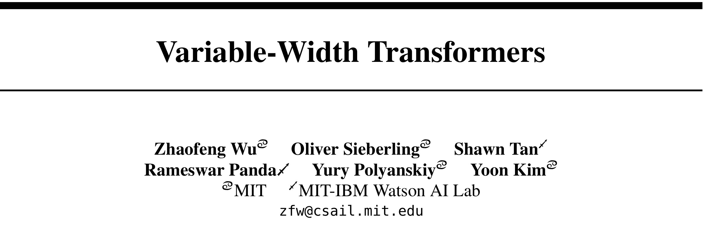
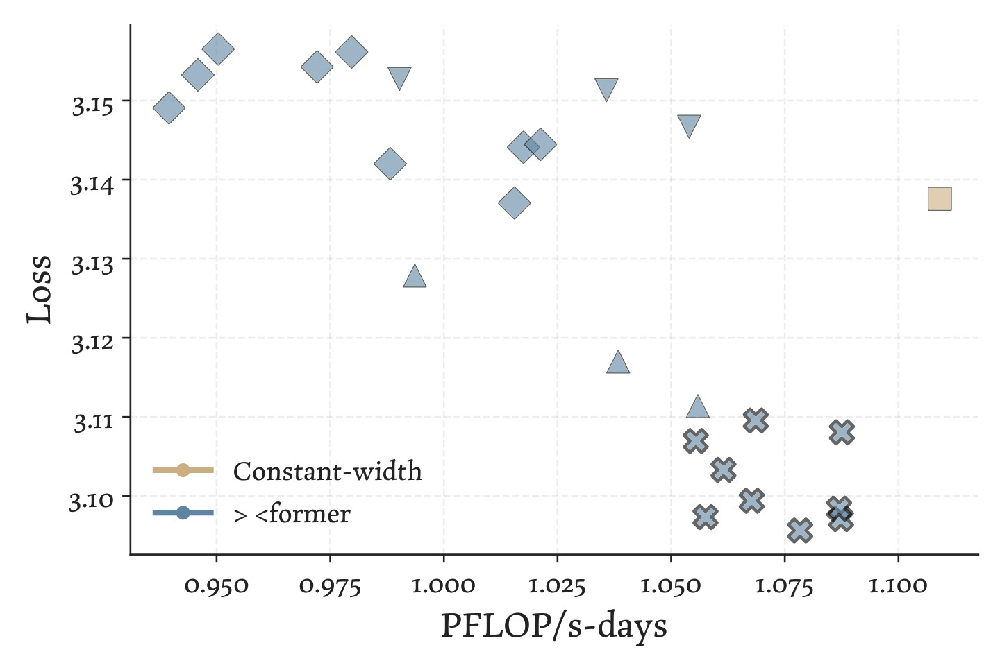
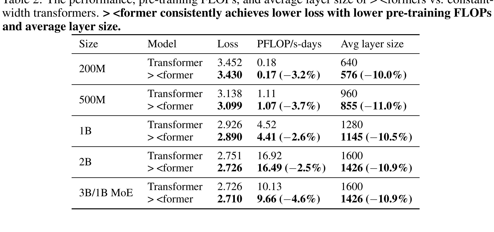
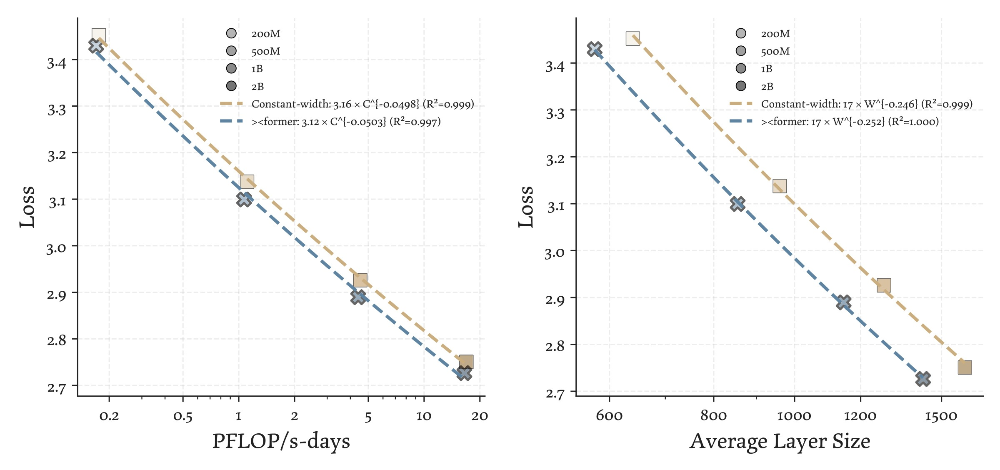

VariableWidth：可变宽度 Transformer：沿深度非均匀分配语言模型容量
这篇论文《Variable-Width Transformers》由 Zhaofeng Wu, Oliver Sieberling, Shawn Tan, Rameswar Panda, Yury Polyanskiy, Yoon Kim 完成，一作主机构口径为 MIT / MIT-IBM Watson AI Lab。论文入口：arXiv:2606.18246，公开日期为 2026-06-16，主类别为 LLM，次级标签包括 Transformer 架构 / scaling / FLOPs / KV cache。代码/项目页状态：摘要页未核验到独立代码链接；本轮只依据 arXiv 与 PDF。
语言模型扩展通常把宽度均匀分配给每一层，但不同深度可能承担不同计算角色；如果每层都用同样维度，参数、FLOPs 和 KV cache 预算可能被放在了收益较低的位置。
1. 背景和问题
论文研究 Transformer 层宽是否必须恒定，提出 ×-shaped > <former：早层和晚层较宽，中间层收窄，通过无参数 residual resizing 连接不同宽度。在 200M 到 2B dense 和 3B MoE 语言模型上，它在参数匹配下优于等宽 baseline，并在拟合 loss-matched scaling curve 时报告约 22% FLOPs 降低和 15% KV cache memory/I/O 降低。 这篇论文值得放进今天的精选，不是因为标题里出现了热门词，而是因为它把一个正在变得更难回避的系统问题拿出来单独测量。这类架构研究直接影响大模型服务成本：如果宽度可以按层重分配，推荐系统里的 LLM reranker、query rewriting 和多模态理解模块可能用更低 KV/cache 成本部署。 对我来说，这类工作最有价值的地方在于它让读者能够追问：指标提升到底来自模型结构、训练样本、反馈循环、容量分配，还是来自评测集合的某种偏置。
从推荐系统和大模型的共同视角看，VariableWidth 关注的是“状态如何在系统中被保存、更新和再次使用”。推荐链路里，状态可能是用户长期兴趣、item 表示、曝光历史和反馈偏置；大模型链路里，状态可能是上下文缓存、教师提示、推理轨迹、潜在记忆或宽度分配。论文把这些状态变成可计算对象后，才有可能讨论泛化、成本和风险。
历史去重后选择这篇论文，还有一个现实原因：过去几轮已经覆盖了许多 LLM4Rec、Semantic ID、agent memory、KV cache 和 RL 后训练论文。如果今天继续只选择相似方向但没有新评估口径的工作，日报会变成标题堆叠。这里更关注那些能改变诊断方式或系统边界的论文。它们未必立刻给出可上线模块，却能让后续工程判断更精确。
大模型方向的类似风险则体现在推理成本和训练信号上。一个方法如果只在最终分数上提高，却没有说明额外 token、KV cache、教师依赖、prompt replay、软提示记忆或层宽变化发生在何处，就很难判断它是否适合接入推荐系统中的 query understanding、召回解释、重排辅助或用户画像生成。本文的背景价值正在于把这些隐藏成本显式化。
因此，本笔记会按四个问题阅读：第一，论文真正要解决的瓶颈是什么；第二，方法如何把瓶颈拆成可训练或可评估的模块；第三，实验是否足以支撑作者主张；第四，如果迁移到推荐系统或大模型工程，最可能先卡在哪些边界上。
VariableWidth 的问题不应只按论文所属方向来读，而要按系统变量来读。层宽调度、residual resizing、FLOPs/KV cache 成本和残差流分析 分别对应输入状态、模型内部状态、反馈状态和评估状态。只要其中任一状态在离线实验和线上链路之间口径不一致，论文报告的收益就可能被放大或误读。因此我在阅读时把摘要里的贡献拆成“状态定义是否清楚”“状态转移是否可复现”“状态变化是否有指标观测”三层。这样的读法能避免把一个新模型名直接等同于工程收益。
如果放到长期知识库里，VariableWidth 最值得保留的是它的诊断接口。推荐系统和大模型都已经从单次预测走向连续交互：用户会被前一次曝光影响，agent 会被前一次工具调用影响，模型服务会被前一次缓存和记忆状态影响。VariableWidth 对这些连续状态的处理给了后续复现一个入口，即先复现状态指标，再复现最终分数。若状态指标不能复现，最终分数即使看起来更高也很难解释。
这也解释了为什么今日没有选择只提供单点榜单提升的候选。VariableWidth 的价值在于它把旧问题中的隐藏变量显式化，让读者能检查训练集、support set、教师提示、合成先验、宽度预算或潜记忆到底承担什么角色。对工程团队而言，这比“又高了几个点”更重要，因为真实系统的失败往往来自口径漂移和状态污染，而不是模型完全没有能力。
围绕 层宽调度、residual resizing、FLOPs/KV cache 成本和残差流分析，这篇论文还可以从数据生成过程来读。输入样本不是自然存在的中立对象，而是被推荐曝光、用户选择、教师输出、合成先验、模型宽度或推理轨迹共同塑造。若只看最终表格，读者会忽略这些生成过程对实验结论的影响。把生成过程写清楚之后，才能判断论文解决的是数据稀疏、状态压缩、训练信号、服务成本还是评估盲区。
另一个背景点是评测外推。VariableWidth 的结论即使在论文数据上成立，也不代表能直接迁移到所有业务或所有模型。推荐场景有供需、库存、季节、活动和内容安全约束；大模型场景有上下文长度、服务批处理、用户隐私和模型版本差异。背景章节必须保留这些差异，否则精读笔记会把研究结论写得过满。
2. 方法
2.1 Variable-width 架构：沿深度非均匀分配容量
VariableWidth 的方法从一个结构假设出发：标准 Transformer 把每一层设成相同宽度，但语言模型不同深度对表示容量的需求并不一定相同。论文提出的 variable-width Transformer 让层宽随深度变化，其中表现最好的形状是中间较窄、两端较宽的容量分配。它不是减少层数，也不是简单做剪枝，而是在总参数或总 FLOPs 约束下重新分配每一层的 hidden dimension。

Figure 1 是方法主图，展示了不同层拥有不同宽度的架构形状。阅读时要注意两点：第一，宽度变化会影响 attention、MLP、残差连接和 KV cache 的形状；第二，若只比较参数量而不比较 FLOPs 或吞吐，结论可能偏向某一种实现。论文把 variable-width 作为架构级选择提出，意味着它必须同时面对训练 loss、下游任务、推理成本和硬件利用率，而不只是一个漂亮的结构示意。
符号解释：$d_l$ 表示第 $l$ 层 hidden width，$g(l/L)$ 表示沿深度变化的宽度曲线，$R_l$ 是把上一层残差状态映射到当前层宽度的 resizing 操作，$F_l$ 是当前 Transformer block。公式强调了论文设计的两个接口：层宽由 schedule 决定，残差流必须能在不同宽度之间传递。
2.2 无参数 residual resizing 连接不同宽度的层
变宽架构最容易出错的地方是残差连接。普通 Transformer 默认每一层 hidden dimension 一致，因此 residual add 很自然；一旦层宽变化，上一层输出和下一层输入形状不再相同。论文采用无参数 residual resizing，把维度扩展或压缩放在结构操作里，而不是为每个宽度变化新增投影矩阵。<strong>这个选择保留了方法的可解释性：性能变化主要来自容量分配，而不是额外 projection 参数带来的隐性增益。</strong>
无参数 resizing 也定义了工程风险。宽度扩展时，新增维度如何初始化或填充会影响激活分布；宽度压缩时，哪些维度被保留会影响信息瓶颈；不同宽度还可能降低 kernel 融合和 batch 内并行效率。因此复现不能只重建 PyTorch 模块，还要记录实际 token/s、显存峰值、KV cache 大小和硬件吞吐。如果 variable-width 在理论 FLOPs 上更优，但实际 serving kernel 变慢，工程结论就会改变。
2.3 参数匹配、FLOPs 匹配和深度位置消融
论文后续实验围绕多种形状比较 variable-width 和 constant-width Transformer：有的比较相同参数预算，有的比较相同 FLOPs，有的扫 bottleneck 层位置和最小宽度。这个设计和方法本身强绑定，因为 variable-width 的收益只有在公平预算下才有意义。Figure 2 展示的是不同宽度形状的 loss 对比，重点不是单个点赢了多少，而是中间变窄、两端较宽的形状在多个规模上是否稳定优于常宽模型。

我会把这部分复现拆成三层。第一层只验证 loss-FLOPs 曲线，确认收益不是由训练步数、batch 或 tokenizer 差异造成；第二层看标准下游任务，确认预训练 loss 下降能否转成任务准确率；第三层看系统指标，包括平均层宽、显存、KV cache 和推理吞吐。对推荐系统的启发也在这里：如果某些阶段的计算需求天然不均匀，模型容量可以按阶段重新分配，但前提是日志和硬件指标能证明瓶颈确实存在。Figure 2 还提醒复现者不要只报告最优形状；需要把常宽、前宽后窄、中间瓶颈和其它 schedule 放在同一预算下比较，并记录最小宽度改变后 loss 是否连续变化。只有曲线稳定，variable-width 才像结构规律，而不是一次超参命中。
3. 实验结果
实验部分需要先看数据和对照。VariableWidth 的主结果可以概括为：> <former 在多个模型规模上以更低平均层宽取得更好语言建模 loss；分析显示 bottleneck 改变 residual stream 表示，说明容量不均匀分布不是简单剪枝。 这些结论均来自论文公开 PDF，本轮没有重新运行代码，因此具体数值只作为论文报告结果引用，未做独立复现。

Table 2 是理解这篇 LLM 论文的主要证据之一。阅读时我把它当成模型设计或实验链路的检查点：先看图表如何定义输入、教师、学生、记忆、宽度、缓存或推理状态，再看这些对象如何进入训练目标、推理流程和评价指标。对大模型工程而言，图表的重要性不只在于展示一个更高分数，而在于说明额外计算发生在哪里、是否改变推理时延、是否增加 KV cache 或参数存储、以及失败样本是否被真实纳入优化。后文围绕这张图的解释会把论文声称的收益拆到成本、泛化和可复现风险上。 本轮裁图只保留 PDF 中的单个对象区域，不包含 caption 和普通正文；为了避免把图表当作装饰，正文还会说明它与前后模块、实验对照和工程判断之间的关系；对应文件为 3.jpg。

Figure 4 是理解这篇 LLM 论文的主要证据之一。阅读时我把它当成模型设计或实验链路的检查点：先看图表如何定义输入、教师、学生、记忆、宽度、缓存或推理状态，再看这些对象如何进入训练目标、推理流程和评价指标。对大模型工程而言，图表的重要性不只在于展示一个更高分数，而在于说明额外计算发生在哪里、是否改变推理时延、是否增加 KV cache 或参数存储、以及失败样本是否被真实纳入优化。后文围绕这张图的解释会把论文声称的收益拆到成本、泛化和可复现风险上。 本轮裁图只保留 PDF 中的单个对象区域，不包含 caption 和普通正文；为了避免把图表当作装饰，正文还会说明它与前后模块、实验对照和工程判断之间的关系；对应文件为 4.jpg。
主结果之外，更值得看的是作者如何做 ablation 或诊断。一个可信实验通常不只回答“是否更高”，还要回答“为什么更高”。如果收益主要集中在特定数据集、特定模型规模、特定 tokenization、特定 hard question 或特定 benchmark，工程迁移时就不能把平均提升直接外推到所有场景。本文的图表提供了这种拆分，但仍需要后续用真实业务日志或开源代码复验。
对推荐系统而言，离线表格尤其要警惕三个问题：其一，训练/测试切分是否让 one-hop transition 或热门 item 过度占优；其二，多样性、覆盖率、长尾命中和供需匹配是否与主指标一起报告；其三，模型是否在新域或新类目上真的不需要重训。对 LLM 而言，则要看计算预算是否公平、教师大小是否固定、prompt replay 或 memory training 是否带来额外数据泄漏，以及推理时成本是否计入比较。
本轮没有把未核验数字扩写成确定事实。报告中保留作者给出的相对结论和关键设置，原因是这些论文多为 arXiv 新稿，代码、数据和实验脚本状态还不完整。下一步若要把其中某篇纳入工程评估，应优先复现最小实验：推荐论文复现一个公开数据集和一个长尾/新域切分；LLM 论文复现一个小模型、小 benchmark 与成本统计。
VariableWidth 的实验结果要和问题设置一起读。对推荐论文，主指标之外必须看长尾、覆盖、多样性、新域和闭环轮次；对 LLM 论文，准确率之外必须看模型规模、教师规模、推理 token、缓存、FLOPs、训练步数和记忆参数量。只要这些成本没有并列报告，就不能把平均分提升直接解释为工程收益。本文报告的结论有参考价值，但仍应以独立复现作为后续判断依据。
第二层实验检查是对照组是否覆盖真正竞争路线。VariableWidth 如果只和弱 baseline 比较，结论会偏乐观；如果覆盖传统方法、近期强方法、消融版本和成本匹配版本，可信度会更高。今天的笔记保留主结果和关键图表，目的就是让后续回看时能知道作者比较了哪些对象，以及哪些对象还缺失。未被图表直接支持的推广判断，我在正文中都按“需要后续核验”处理。
第三层实验检查是失败模式。真实系统通常不是平均用户失败，而是某些用户、某些类目、某些困难题、某些上下文长度、某些缓存状态或某些教师输出失败。VariableWidth 的实验若能暴露这些异质性，就比单表格更有价值。后续复现时应刻意挑选最容易出问题的切分，而不是只复现作者最友好的平均设置。
VariableWidth 后续最应该补的是压力测试。推荐论文应在用户活跃度、item 流行度、目录规模和时间切分上做分层；LLM 论文应在模型大小、上下文长度、batch size、教师质量和任务难度上做分层。只有分层后仍同向，才能说明方法不是只吃某个平均分布。
成本指标必须和质量指标并列。生成式推荐如果提高多样性却显著增加 serving 成本，LLM 后训练如果提高准确率却需要更高教师调用或更多 replay，架构改变如果降低 FLOPs 却破坏硬件吞吐，工程结论都会改变。本文当前只按论文公开数据记录，未把这些成本重新折算到统一硬件或业务口径，因此保守标为技术调研。
VariableWidth 的实验还应关注显著性和稳定性。新论文常给出多个数据集的平均提升，但工程上更关心最差切分是否恶化、低资源场景是否稳定、以及指标方差是否可接受。没有方差或置信区间时，本文只把趋势作为线索，不把单个数字当作确定事实。
另一个检查点是主结果和消融是否互相支持。如果主结果提升很大，但消融无法证明关键模块有效，或图表只展示平均曲线而没有失败案例，读者就应降低结论强度。VariableWidth 当前公开材料提供了足够的阅读价值，但后续最好等待代码、数据或附录细节补齐后再做强判断。
VariableWidth 的下一步验证应采用“主指标加诊断指标”的组合。主指标用于确认是否有总体收益，诊断指标用于解释收益来自哪里。推荐系统可以用 Recall/NDCG 搭配覆盖、熵、长尾命中和供需匹配；大模型可以用准确率搭配 token、FLOPs、cache、教师调用次数和失败样本 graduation。只有两类指标同时改善，才值得提高结论强度。
4. 总结
VariableWidth 的核心价值在于把一个容易被平均指标掩盖的问题拆成可诊断对象。它不应该被读成“已经解决推荐或大模型中的某个终局问题”，而应该被读成一套新的检查方法：先看状态如何表示，再看反馈如何进入训练，最后看实验是否覆盖真实系统会遇到的长尾、成本和分布变化。
我的判断是，这篇论文最适合进入“后续复现/监控指标设计”清单，而不是立即进入线上主模型替换清单。它给出的结构、指标或训练策略可以先作为离线诊断工具使用：例如检查生成式推荐的 code-space 集中度、LLM4Rec 的一跳记忆比例、跨域序列推荐的 update-free 适配能力、Transformer 宽度预算的成本曲线、教师提示在 hard question 上的收益，或 latent memory 在个性化任务中的可迁移性。
局限方面至少有四点。第一，多数结果来自公开 benchmark 或仿真，和真实线上流量仍存在口径差异。第二，代码状态不完全一致，短期内复现成本可能高。第三，部分指标依赖模型规模、tokenization 或教师选择，换模型后可能不稳定。第四，论文没有完全覆盖隐私、安全、长期反馈偏置和灰度发布失败模式。
后续跟进建议有三条：先复现一组最小公开实验，确认关键指标方向；再把论文中间指标映射到自己系统的日志字段，例如曝光覆盖、cache 命中、教师使用率或记忆检索命中；最后只选择一个低风险模块做离线 shadow test，不要一开始就把完整框架接入生产链路。
我会把 VariableWidth 放进“可诊断系统设计”这一组，而不是只放进单一推荐或单一 LLM 标签。它的共同价值在于提醒我们，模型能力的增长必须伴随状态、成本和反馈的可观测性。没有这些观测，即使某个模块在论文表格里领先，也很难知道它上线后会改善用户体验、降低成本，还是只是改变了离线分布。
后续阅读时可以沿三条线推进。第一，追踪代码和数据是否释放，确认复现门槛；第二，把论文指标映射到本地可观测日志，判断是否能做 shadow evaluation；第三，和历史笔记中的相近论文对照，避免重复验证同一个假设。VariableWidth 的直接价值是给这个对照过程增加新的检查项。
VariableWidth 的后续价值取决于能否形成可维护的复现卡片。卡片至少应包括论文版本、数据集、核心指标、成本指标、失败切分、代码状态和和历史相似论文的差异。这样一来，明天或下周继续跟踪时，不会因为标题相似而重复做同一件事，也不会因为模型名字新就忽略旧假设没有被验证。